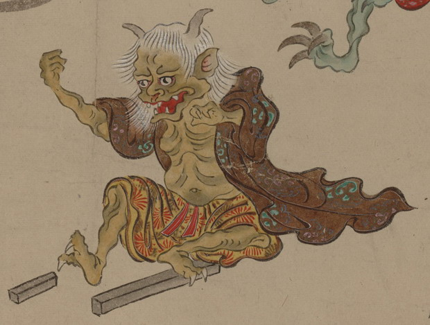

角の生えた化物。白髪で耳が大きく、口から牙が覗いている。茶色の着物を羽織り、腰には黄色い衣をまとっている。何も持っていないが、掲げるように、両腕をあげている。足元には大小2本の角材のような棒が置いてある。
出典：親書誌：U426_nichibunken_0154：妖怪絵巻；ヨウカイエマキ／日付：2010／資源識別子：U426_nichibunken_0154_0024_0000
Copyright (c)2010- International Research Center for Japanese Studies, Kyoto, Japan. All rights reserved.